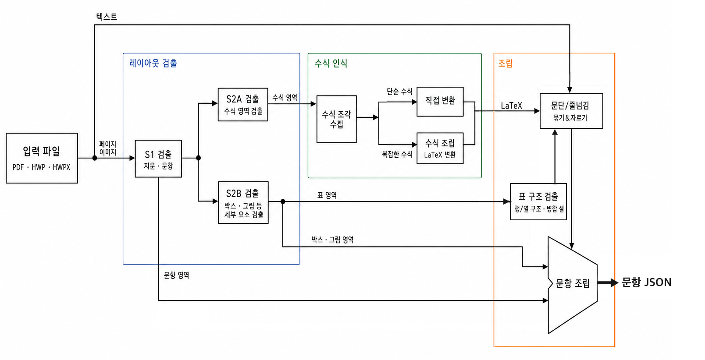

LayoutASM · Pipeline 2.0
1 Forward-pass 구조의 문항 검출 전용 신경망
Pipeline API는 시험지 PDF를 문항 단위의 Question 객체로 변환합니다.
7월에 공개한 Pipeline 1.0은 여러 모델을 단계마다 호출하고 그 결과를 규칙으로 합치는 구조였습니다.
그러나 기존에는 다중 모델 구조로 인해 앞 단계의 결과가 나온 뒤에야 다음 모델을 호출할 수 있어 병렬 처리와 다중 프로세스 처리에 한계가 있었고, GPU를 효율적으로 활용하지 못했습니다. 또한 각 모델이 독립적으로 동작하여 모델의 Attention 사이에서 정보를 주고받지 못했습니다. 줄 판정 모델은 이웃한 두 줄만 입력으로 받아 검출 모델이 찾은 영역 정보를 활용하지 못했고, 이는 검출 정확도 향상의 한계로 이어졌습니다.
LayoutASM은 이러한 문제를 해결하기 위해 단 1 Forward pass만으로 수능형 시험지면에서 문항 요소를 검출하여 JSON으로 변환할 수 있도록 설계되었습니다.
1. LayoutASM 아키텍처

비전 검출 인코더
페이지 이미지 한 장을 입력받아 13종의 상자를 한 번에 검출합니다. 문항, 문항 번호, 지시문, 지문, 보기, 글 상자, 그림, 표, 빈칸 상자, 줄 안 그림, 범위 표시, 수식, 캡션입니다.
페이지 전체를 보고 모든 상자를 찾으므로, 영역을 먼저 잘라낸 뒤 그 안에서 요소를 다시 찾는 단계가 없습니다.
줄 단위 포인터 결합 판정 인코더
검출된 영역 안의 글자를 좌표 기준으로 줄로 묶고, 줄과 줄을 어떻게 이을지 판정합니다. 줄 묶기는 라벨된 1,385부의 줄 639,457개 중 99.75%가 정답과 같은 글자 순서였습니다.
입력은 페이지의 모든 줄을 이어 붙인 하나의 시퀀스입니다.
| 구성 | 내용 |
|---|---|
| 영역 토큰 | 영역마다 맨 앞에 비전 검출이 판정한 영역 종류 토큰 하나 |
| 글자 토큰 | 줄의 글자를 토큰화하고 줄마다 끝에 줄끝 토큰 하나 |
| 기하 특징 | 토큰마다 줄의 위치, 영역 안 여백, 높이, 앞뒤 줄 간격 등을 임베딩에 더함 |
| 다음 조각 | 단이나 쪽을 넘어 이어지는 영역은 다음 조각의 첫 두 줄을 뒤에 붙임 |
출력은 줄끝 토큰 위치의 상태만 사용합니다. 다음 줄과의 관계를 이어짐, 띄어쓰기, 새 문단 중 하나로 분류하고 문단 정렬을 함께 예측합니다. 페이지의 모든 줄 경계가 같은 Forward pass에서 페이지 전체 문맥과 영역 종류를 보고 판정됩니다.
x = self.embed(ids) + self.features(feats)
hidden = self.trunk(inputs_embeds=x, attention_mask=mask).last_hidden_state
h = self.norm(hidden[b, marks])
return self.brk(h), self.align(h)구성 모델
| 부품 | 모델 | 입력 |
|---|---|---|
| 비전 검출 | 객체 검출 모델 | 페이지 이미지 |
| 줄 결합 판정 | 사전학습 임베딩 모델 | 페이지 줄 시퀀스 |
| 표 구조 | 사전학습 비전 인코더 | 표 이미지와 위치 정보 |
학습 데이터 및 검증 결과
기출 시험지 1,385부에 영역 상자, 표의 행·열·병합 칸, 줄 경계의 이어짐·띄어쓰기·새 문단을 라벨링했습니다. 이 중 40부 360쪽은 검증용으로 분리했습니다.
| 모델 | 검증 결과 |
|---|---|
| 비전 검출 | mAP50 0.898, mAP50-95 0.853 |
| 줄 결합 판정 | 줄 경계 19,153개 중 98.1% 일치 |
| 표 구조 | 표 218개 중 206개 일치 |
2. Pipeline 2.0 구조


처리 과정 단순화
| 항목 | Pipeline 1.0 | Pipeline 2.0 |
|---|---|---|
| 지면 검출 | 영역 검출, 영역 자르기, 요소 검출 | 1 Forward pass |
| 텍스트 연결 | 줄 쌍마다 모델 3개, 읽기 순서 모델, 규칙 | 페이지당 1 Forward pass |
| 표 | 셀 검출 2개, 표 분류 1개 | 표 구조 모델 1개 |
| 서빙 | 상시 켜 둔 GPU 서버 | 요청이 있을 때만 켜지는 Cloud Run GPU |
3. GPU 워커 병렬 처리 구조 개선
이전 구조

- 프로세스 3개가 문서를 한 부씩 맡아 PDF 파싱, 모델 추론, 문항 조립을 순서대로 수행했습니다.
- 세 프로세스가 같은 시점에 CPU 단계를 지나는 동안 GPU는 대기했고, GPU Utilization은 36.1%였습니다.
- 프로세스마다 모델 4종의 Model Replica를 VRAM에 적재하여 24.0GB 한도에 도달했고, 프로세스를 더 늘릴 수 없었습니다.
Pipeline 2.0

- 모델 가중치가 없는 CPU Worker 16개가 PDF 파싱과 문항 조립을 맡고, 모델 추론은 단일 GPU 프로세스에 요청합니다.
- 문서마다 처리 단계가 어긋나게 진행되어 한 문서의 CPU 단계와 다른 문서의 GPU 단계가 겹치고, GPU가 연속으로 가동됩니다.
- GPU 프로세스는 모델 가중치를 한 벌만 적재하고, 같은 모델로 들어온 여러 문서의 요청을 Dynamic Batching으로 묶어 한 번에 추론합니다.
- EqASM 디코딩은 CUDA Graph로 캡처하여 디코딩 단계마다 반복되던 커널 실행 오버헤드를 줄였습니다.
4. 성능 개선 결과
처리 속도

* 검증용 시험지 40부 기준. 1부 처리는 문서당 중앙값, 40부 처리는 서버 처리 시간 합계입니다.
정확도
라벨된 시험지 1,385부, 33,378문항에서 측정한 결과입니다.
| 지표 | Pipeline 1.0 | Pipeline 2.0 | 향상 |
|---|---|---|---|
| 문항 경계 일치 | 99.67% | 99.88% | +0.21%p |
| 문항 번호 일치 | 99.72% | 99.92% | +0.20%p |
| 문항별 글자 일치 | 99.80% | 99.90% | +0.10%p |
2026학년도 수능 문항 검출 결과, 한국교육과정평가원
GPU 활용도
| 항목 | 이전 구조 | Pipeline 2.0 |
|---|---|---|
| GPU 사용률 | 36.1% | 95~99% |
| VRAM 사용량 | 24.0GB, 한도 도달 | 14.4GB |
* RTX PRO 4000 기준 측정
LayoutASM 신경망은 사내 GPU 클라우드에서 운영되며, Pipeline API를 통해 사용할 수 있습니다.